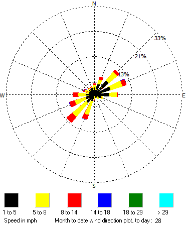
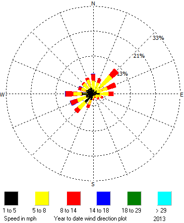
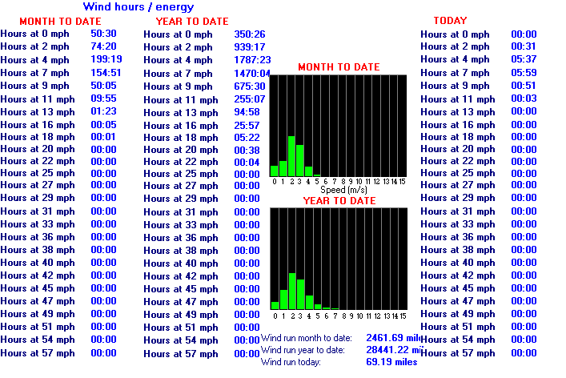

Detailed Wind Data
Current/Latest | |
| Measure | Value |
| Gust | 0.9 mph |
| Speed | 1.4 mph |
| 10-min Speed | 0.5 mph |
| 30-min Speed | 1.4 mph |
| 1hr Speed | 1.9 mph |
| Beaufort Speed | Force 0 |
| 10-min Bft | Force 0 |
| --- | --- |
| Direction | NW |
| 10-min Direction | N |
| 30-min Direction | NNE |
| 1hr Direction | NNE |
| 24hr Direction | W |
| --- | --- |
| Day Average Speed | 1.8 mph |
| Week Average Speed | 4.9 mph |
| Month Average Speed | 3.8 mph (-0.1) |
| Year Average Speed | 5.0 mph (+0.4) |
| Day Average Direction | NNW |
| Month Average Direction | WSW |
Current Day/Month/Year Records | ||
| Measure | Value | Time/Date |
| Max Gust Last Minute | 2.0 mph | 07:45 |
| Max Gust Last 10-mins | 2.4 mph | N/A |
| Max Gust Last Hour | 4.3 mph | 06:53 |
| Max Gust Today | 7.1 mph | 00:11 |
| Max Gust Yesterday | 13.7 mph | 06:51 |
| Max Gust this Week | 16.3 mph | Sat |
| Max Gust this Month | 16.3 mph | Day 1 |
| Max Gust this Year | 45.3 mph | 25th April |
| --- | --- | --- |
| Max Speed Today | 5.4 mph | 00:14 |
| Max Speed Yesterday | 9.4 mph | 11:02 |
| Max Speed this Week | 10.9 mph | Sat |
| Max Speed this Month | 10.9 mph | Day 1 |
| Max Speed this Year | 27.9 mph | 3rd Jan |
| --- hi | --- | --- |
| Max 10-min Gust Last 12hrs | 5.7 mph | N/A |
| Max 10-min Gust Last 24hrs | 8.7 mph | N/A |
All-time Records | ||
| Measure | Value | Time/Date |
| Highest Wind Gust | 45.3 mph | 25th April 2012 |
| Highest Wind Speed | 27.9 mph | 3rd Jan 2012 |
| Calmest Day (24h mean) | 0.6 mph | 15th Nov 2010 |
| Windiest Day (24h mean) | 12.5 mph | 8th June 2012 |
| Calmest Month | 3.5 mph | Oct 2009 |
| Windiest Month | 6.2 mph | Dec 2011 |
| --- | --- | --- |
| Highest September Gust | 36.8 mph | Day 12, 2011 |
| Highest September Speed | 20.7 mph | Day 12, 2011 |
| Calmest September Day | 1.1 mph | Day 26, 2009 |
| Windiest September Day | 10.8 mph | Day 12, 2011 |
| Calmest September | 3.8 mph | 2012 |
| Windiest September | 5.1 mph | 2011 |
| --- | --- | --- |
| Highest 3rd Sep Gust | 28.8 mph | 2009 |
| Highest 3rd Sep Speed | 19.6 mph | 2009 |
| Calmest 3rd Sep | 1.8 mph | Today |
| Windiest 3rd Sep | 9.8 mph | 2009 |
Note 1: Valid wind records began in August 2009.
Note 2: Figures in brackets refer to departure from average conditions.
A note on "Speed" vs. "Gust": "Speed" is the windspeed sampled over a one minute period, "Gust" is the windspeed sampled over a 14 second period.
September Windrose |
2012 Windrose | |
 |
 | |
Wind Energy | ||
 | ||
| This shows the number of hours that each wind speed has been reached. For generating energy with a turbine, an average of >4m/s is generally required for local use, and >6m/s for grid use, so this location is unlikely to be suitable for either. | ||
NB: Daily wind speed maxima & averages for the current year (and all other years on record) can be viewed here